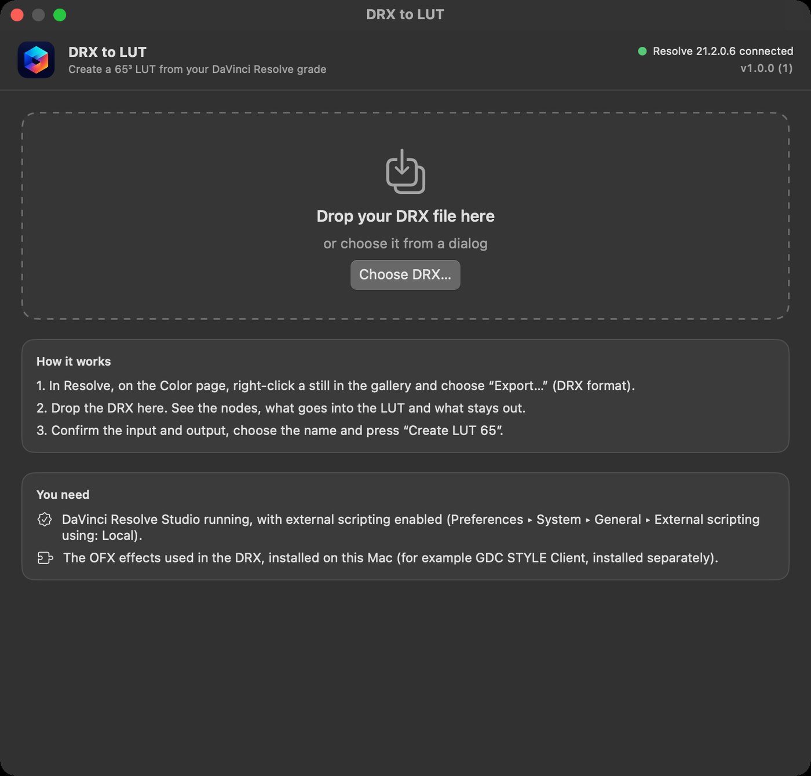

From a Resolve grade
to a 65³ LUT.
Drop a DRX exported from DaVinci Resolve, see exactly which nodes can go into a LUT and which cannot, and get a .cube file with notes for applying it correctly. Free, local, no accounts.

Three steps, no Terminal.
The app works in a separate Resolve project, so your own project is never saved or changed behind your back. Nothing is sent anywhere.
- Export a DRX from ResolveOn the Color page, right-click a still in the gallery and choose Export, DRX format.
- Drop it in the appYou see the nodes, what goes into the LUT and what stays out. Confirm the input and output colour spaces.
- Press “Create LUT 65”You get a 65³ .cube, the DRX copy and a notes file explaining how to apply it without doubling transforms. Open the folder with one click.
A LUT changes colour pixel by pixel. Nothing more.
Blur, grain, halation, noise reduction, masks, tracking and anything that depends on neighbouring pixels or other frames cannot be inside a LUT. The app never applies an incomplete DRX silently: it tells you what was left out.
What was actually verified.
Only what was tested is claimed here.
| macOS | 13 (Ventura) or later, Mac with Apple silicon. Intel Macs were not tested and are not supported. |
|---|---|
| DaVinci Resolve | Resolve Studio 21.2 verified, with external scripting enabled (Preferences ▸ System ▸ General ▸ External scripting using ▸ Local). Other versions and the free edition were not verified. |
| OFX effects in the DRX | Must be installed on the same Mac. If one is missing the app says so and creates nothing, because the LUT would be incomplete. |
| GDC STYLE Client | Works with a separately installed GDC STYLE Client. It is not included, and its plugins and licences are not redistributed. The two products are independent and versioned separately. |
| Independence | DaVinci Resolve belongs to Blackmagic Design. This project is independent and not affiliated with or endorsed by Blackmagic Design. |
DRX to LUT 1.0.0
Free. No payment, no activation, no account. Signed with a Developer ID certificate and notarized by Apple (this describes code signing and Apple’s malware scan, not approval of the app’s results).
Download DRXtoLUT-1.0.0.pkg↓- Size
- 11.6 MB
- SHA-256
10c649520bad589a80e9c294039eb5ce4ff90ad846ae514d62dd354fff6f0731- Released
- 2026-11-18
Guides (PDF): Română · English · Español
Open the .pkg, follow the installer (it asks for your Mac password), then open DRX to LUT from Applications. The app checks for updates and verifies the package signature, checksum and version before installing.
What changed.
v1.0.0 — 2026-11-18
First public release: DRX to 65³ .cube with node classification, separate Resolve project, safe cancel and overwrite protection, notes next to the LUT, update check, diagnostics export, uninstall. Romanian, English and Spanish.
Everything is local.
The app bundles a trimmed Python 3.12 runtime (Python Software Foundation licence) and nothing else; you do not install Python or any library. Full list and licence references: OPEN_SOURCE_NOTICES.md.
Your DRX files, LUTs and personal data never leave your Mac. The only network connection is the update check. A local log is kept in ~/Library/Logs/DRXtoLUT.log; you can export a redacted diagnostics package from Settings and send it yourself if you wish. No analytics.